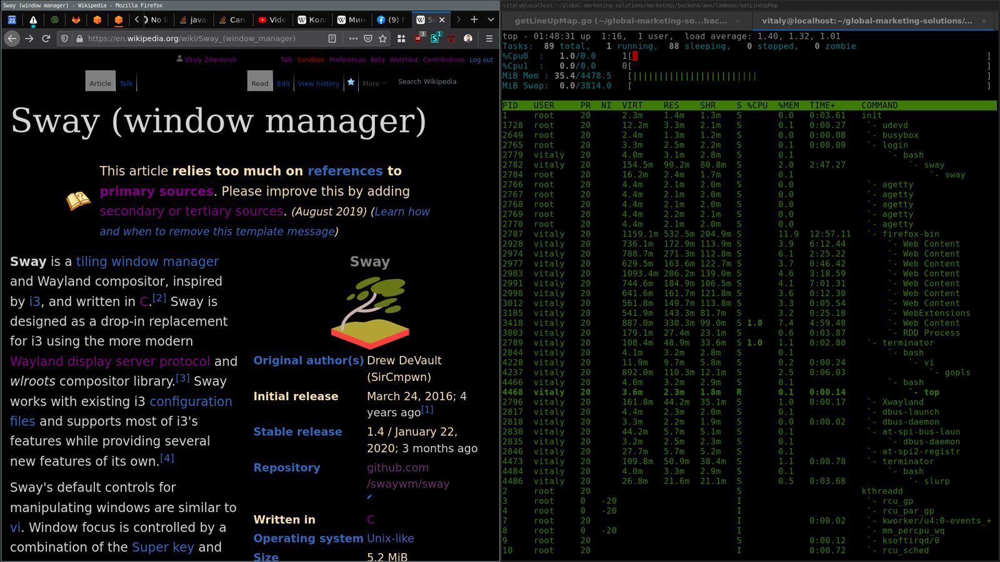

Bonjour, je suis
Emerick
Consultant Cybersécurité & GRC
Analyses, guides pratiques et retours d'expérience autour de la cybersécurité, de la gouvernance, des risques, de la conformité et de la sécurité opérationnelle.
J'explore aussi bien les enjeux organisationnels que les aspects techniques de la cybersécurité afin de proposer des contenus utiles, accessibles et directement applicables.


-

Sécuriser un serveur Linux : les contrôles essentiels
Un tour d'horizon des contrôles indispensables pour durcir un serveur Linux exposé, de la gestion des comptes aux services réseau en passant par le pare-feu.
6 min de lecture -

Burp Suite : guide pratique pour débuter en pentest Web
Prise en main de Burp Suite : proxy d'interception, repeater et scanner passif pour commencer à tester la sécurité d'une application Web.
7 min de lecture -
ISO 27001 : comment préparer efficacement un audit interne
Méthodologie, documents à réunir et pièges à éviter pour aborder sereinement un audit interne dans le cadre d'un SMSI certifié ISO 27001.
5 min de lecture -

Comprendre la différence entre risque, menace et vulnérabilité
Trois notions souvent confondues mais essentielles pour construire une analyse de risques rigoureuse et un langage commun avec les métiers.
4 min de lecture
Articles populaires
-
OWASP Top 10 : comprendre les principales vulnérabilités Web
6 min de lecture
-

ISO 27001 : les étapes essentielles pour structurer un SMSI
7 min de lecture
-

Audit Linux avec Lynis : guide pratique
8 min de lecture
-
Comment réaliser une analyse de risques cybersécurité ?
6 min de lecture
Recevez les prochains articles
Abonnez-vous pour recevoir les nouvelles analyses, guides et ressources autour de la cybersécurité, de la GRC et de la sécurité technique.